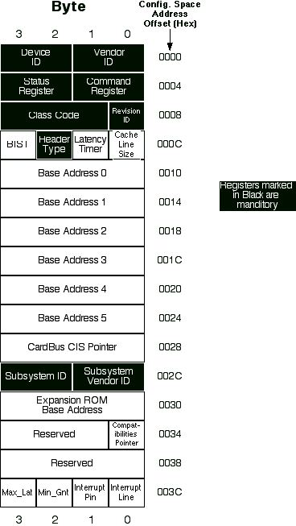

|
Q: How can I display a PCI device's
Configuration Registers in sequential order, in Open
Firmware?
A: Displaying the contents of PCI device's
Configuration Registers sequentially, as shown
in figure 1 can be accomplished in 6 steps.
|

Figure 1. Format for PCI Configuration
Header (Type 0)
|
1. Locate your device in the device tree in open
firmware. An NCR8250 PCI Card as an example.
|
Example 1. Device Tree
Listing
|
0 > dev / ls
ff83d620: /cpus
ff83d8d0: /PowerPC,G4@0
ff83dcc8: /l2-cache
ff83e948: /chosen
ff83eb60: /memory@0
ff83ee00: /openprom
ff83efa8: /client-services
ff840298: /rom@ff800000
ff840498: /boot-rom@fff00000
ff8406c8: /macos
ff8407d0: /options
ff8408d8: /aliases
ff841428: /packages
ff841508: /deblocker
ff841ea0: /disk-label
ff842968: /obp-tftp
ff84c248: /telnet
ff84cb48: /mac-parts
ff84e2f0: /mac-files
ff8511a8: /hfs-plus-files
ff855fc8: /fat-files
ff857dc0: /iso-9660-files
ff858c20: /bootinfo-loader
ff85a8f8: /xcoff-loader
ff85b390: /pe-loader
ff85bde0: /elf-loader
ff85d488: /usb-hid-class
ff85ffc8: /usb-ms-class
ff862c18: /usb-audio-class
ff8d0790: /sbp2-disk
ff8d3130: /ata-disk
ff8d4e98: /atapi-disk
ff8d6de0: /bootpath-search
ff8dd770: /terminal-emulator
ff8dd880: /firewire-disk-mode
ff8f2138: /pseudo-hid
ff8f2238: /keyboard
ff8f2930: /mouse
ff8f2ec8: /eject-key
ff8f3398: /pseudo-sound
ff8f36c8: /multiboot
ff9066b8: /diagnostics
ff906798: /nvram@fff04000
ff907398: /uni-n@f8000000
ff907660: /i2c@f8001000
ff907f28: /cereal
ff908658: /pci@f0000000
ff94b290: /uni-north-agp@b
ff94b578: /ATY,Rage128Ps@10
ff909800: /pci@f2000000
ff90a968: /pci-bridge@d
ff90cc20: /mac-io@7
ff910bd8: /interrupt-controller@40000
ff910e28: /gpio@50
ff910f90: /extint-gpio1
ff9111b0: /programmer-switch
ff911360: /escc-legacy@12000
ff9115d0: /ch-a@12004
ff9117d0: /ch-b@12000
ff9119d0: /escc@13000
ff911c58: /ch-a@13020
ff912680: /ch-b@13000
ff913018: /davbus@14000
ff913350: /sound
ff913ad0: /timer@15000
ff913ce0: /via-pmu@16000
ff9172b8: /rtc
ff917a28: /power-mgt
ff96ac40: /usb-power-mgt
ff917d10: /i2c@18000
ff918618: /cereal
ff918d60: /ata-4@1f000
ff91b450: /disk
ff91bbb0: /ata-3@20000
ff91e2a0: /disk
ff91ea00: /ata-3@21000
ff9210f0: /disk
ff927a80: /AAPL,NCR8250S@4 <---------- My Device
ff927de0: /usb@8
ff92fa68: /usb@9
ff9693a0: /hub@1
ff9695a8: /device@1
ff969720: /keyboard@0
ff969ab0: /eject-key@1
ff969e18: /mouse@2
ff9376f0: /firewire@a
ff90baa8: /pci@f4000000
ff9468c8: /ethernet@f
ff96ae20: /ethernet-phy
ok
|
2. Select your device in the device tree in open
firmware.
|
Example 2. Selecting the Device
|
0 > dev bridge/@4 ok
0 > pwd /pci@f2000000/pci-bridge@d/AAPL,NCR8250S@4 ok
|
Note that the word "dev" was used to select
the device path. The "devalias" for the PCI
bridge path and the unit address for the device,
were used to abriviate the path name. Finally, the
"pwd" (Print Working Directory) word was used to
display the selected device path.
3. Display the devices properties.
|
Example 3. Device Properties
|
0 > .properties
vendor-id 00001000
device-id 00000003
revision-id 00000002
class-code 00010000
interrupts 00000001
min-grant 00000000
max-latency 00000000
devsel-speed 00000001
fcode-rom-offset 00000000
name AAPL,NCR8250S
device_type scsi
model 8250S
reg 00012000 00000000 00000000 00000000 00000000
02012030 00000000 00000000 00000000 00008000
02012014 00000000 00000000 00000000 00000100
power-consumption 00000000 00000000 007270e0 007270e0 00000000
00000000 007b98a0 007b98a0
jsun 4920616d 20686572 6500
assigned-addresses 82012030 00000000 80088000 00000000 00008000
82012014 00000000 80080000 00000000 00000100
ok
|
4. Note the Configuration Space address (phys.hi) from
the "reg" property.
|
Example 4. Configuration Space address is "phys.hi" from the first
entry in the "reg" property. In this case the Configuration Space
address for the device is 0x00012000.
|
reg 00012000
|
5. Define the following word (.cregs) in Open
Firmware:
: .cregs base @
swap 10 base ! h# 40 bounds
do cr i 5 u.r "
: " type i do-config-l@ 8 u.r 4 +loop
base !
;
|
|
Example 5.. Define the word, ".cregs".
|
0
> : .cregs base @ swap 10 base !
h# 40 bounds do cr i 5 u.r " : " type
i do-config-l@ 8 u.r 4 +loop base !
; ok
|
6. Enter the Configuration Space address (phys.hi) and
then the word .cregs.
|
Example 6.. Using ".cregs"
|
0 > 00012000 .cregs
12000: 00031000
12004: 02000004
12008: 01000002
1200c: 00001000
12010: 00000001
12014: 80080000
12018: 00000000
1201c: 00000000
12020: 00000000
12024: 00000000
12028: 00000000
1202c: 00000000
12030: 80088000
12034: 00000000
12038: 00000000
1203c: 00000100 ok
|
Note that the Vendor ID , Device ID, Revision ID
and Class Code values match the coresponding
properties when compared to the byte ordered layout
in figure 1.
[May 18 2001]
|